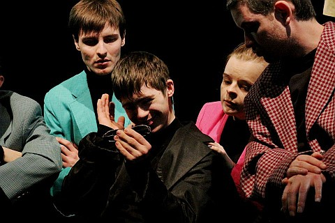
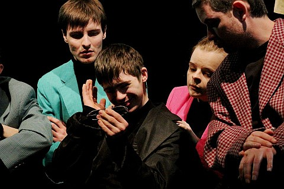

2001
Każdy chce mieć miejsce pod słońcem… Są ciasne miejsca pod słońcem i przestronne. Jest wiele sposobów na posiadanie własnego, wyjątkowego miejsca, ale czy wszystkie środki są uzasadnione?
Opowieść o sobie, o nas, o otwartości i izolacji, o... samotności, wygnaniu, SERCU, WIARZE i MIŁOŚCI.
Spektakl oparty jest na pomysłach i doświadczeniach samych uczniów.
Everyone wants to have a place in the sun... There are narrow and wider places. There are many ways if getting an own, unique place, but are all means justified?
The story about yourself, about us, about openess and isolation, about... loneliness, exile, HEART, FAITH and LOVE.
The play is based on ideas and experience of pupils.